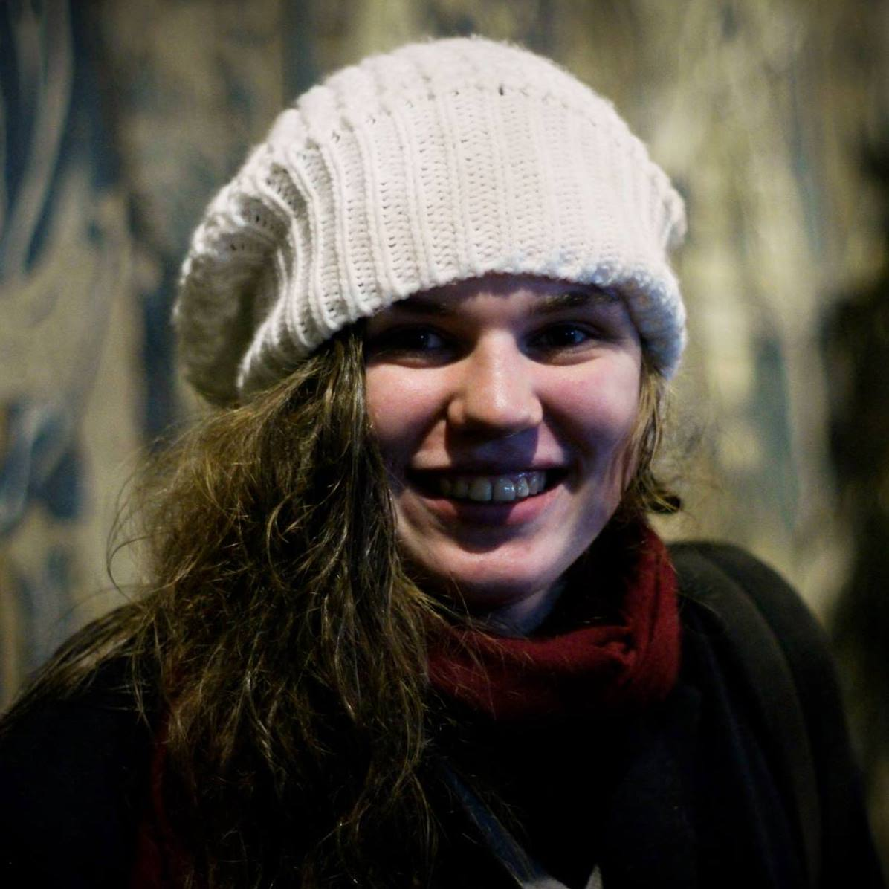
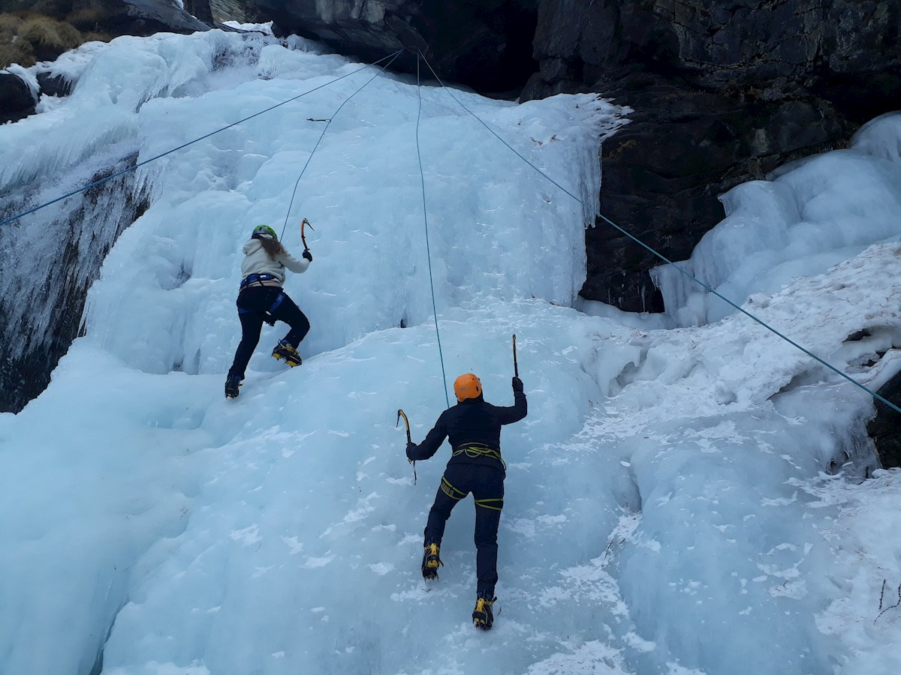

Marie Scraeyen

Ik ben Marie, 21 jaar oud en geboren en getogen in Oudergem, Brussel. Mijn moeder is Nederlandse en ook leerkracht Nederlands.
Mijn vader werkt als IT manager bij AG Insurance. Ik heb ook twee oudere broers die in Brussel wonen en werken. De oudste werkt
in een café, en de middelste werkt bij de post.
Mijn jeugd
Al van jongs af aan was ik geïnteresseerd in de wereld rond mij te begrijpen. Ik had een aanleg voor talen en las dus al van
een jonge leeftijd. Dat ging van literatuur tot boeken over wetenschap en filosofie. Altijd werd ik gezien als "intelligent".
Ik wou ook graag dokter worden want dat leek me het meest logische (dat werd dus ook verteld door mijn omgeving).
Studies ?
Aan het eind van de middelbare school vond ik mijn passie in chemie, en ik kwam terecht in een nationale competitie van biologie,
dus mij leek het meest logisch om Biochemie en Biotechnologie aan de KU Leuven te studeren. Op universiteit merkte ik wel dat er
een verschil is tussen een vak graag doen en daar je hele leven rond draaien. Eigenlijk gaf ik weinig om de studie, ik deed het
vooral omdat het me de opportuniteit zou geven voor een belovende toekomst. Mijn toekomst lag niet in mijn eigen handen.
Ik had interesse in het maken van Indie Games en ik had het gevoel dat een sterke achtergrond in programmeren noodzakelijk was.
Zo ben ik hier gekomen.
Nog over mij
Mijn kot ligt aan de Naamsepoort in Leuven. In het weekend ga ik nog naar mijn ouders in Oudergem. Als hobby's heb ik klimmen,
lezen en in de zomervakantie doe ik vrijwilligerswerk bij een opvangcentrum voor vluchtelingen.

Graduaat Programmeren
Mijn eerste indrukken
Dit is de eerste keer dat ik bewust een studie heb gekozen die echt praktisch is. Dat vind ik interessant. Hetgene wat je leert is erg
toepasbaar. Front End: Basis is de meest creatieve vak, waardoor ik het ook heel stimulerend vind. Programmeren met C# is uitdagend.
Het is dan ook een meer wiskundige manier van denken, waar ik minder intuïtie voor heb.
Object Oriented Analysis is een tamelijk lastig en moeilijk vak, vanuit eerste indruk. Database systemen is dan wel het minst
engagerende van allemaal, dat trekt het me dan ook het minste aan (misschien komt dat omdat het vak op vrijdag avond is 😉).
De campus van UCLL is wel een stuk soberder dan die van de KU Leuven. Ik ben al vertrouwd geraakt met de cafetaria (zeker het
broodjes automaat) en ik heb ook al de koffie machine ontdekt. Het is een tamelijk rustige campus, dat ben ik niet echt gewend
want Campus Arenberg was net omgekeerd.
Verhalen
Films
Verhalen hebben me altijd wel aangetrokken. Of ze nu in games, literatuur of films zijn. In het middelbaar was ik bijzonder bezeten
door films. Daarin heb ik ook in een zin mijn identiteit gevonden. Op een moment was ik wel heel pretentieus en keek ik vooral
buitenlandse kunstfilms. Nu ben ik ook meer open voor commerciële films, hoewel veel van hen wel tamelijk slecht zijn.
Hier zijn een paar films waarvan ik vind dat iedereen ze wel eens gezien moet hebben.
- Frances Ha (2013)
- Een 27-jarige vrouw die een carriëre in ballet zoekt maar moeite heeft met opgroeien.
- Good Will Hunting (1997)
- Een jongen met wiskundige talenten die zich niet goed kan integreren in de maatschappij door zijn moeilijk verleden.
- Le Portrait d'une Jeune Fille en Feu (2019)
- Twee vrouwen in de 18de eeuw die verliefd zijn op elkaar maar dat verborgen houden.
- Little Women (2019)
- 4 zussen in de 19de eeuw. Alle vier moeten ze hun identiteit als vrouw kneden in een patriarchale maatschappij .
![Frances Ha]()
Games
Recent heb ik ook meer appreciatie voor verhalen in games, ze zijn ook veel beter dan vroeger.
Hier zijn de games die ik recent heb gespeeld (en veel van genoten):
- The Last of Us 2
- Persona 5
- Pathologic (ietsje minder van genoten 😨)